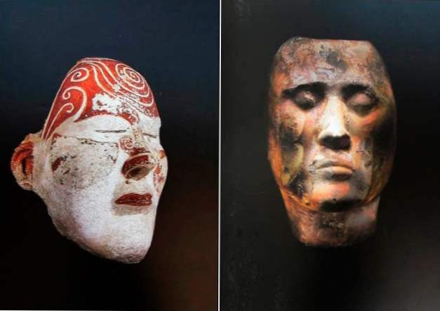
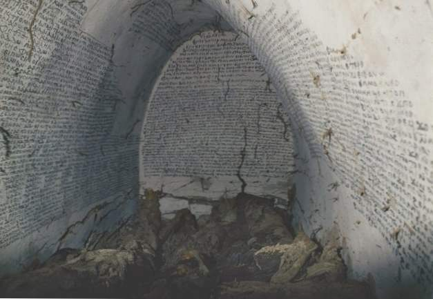
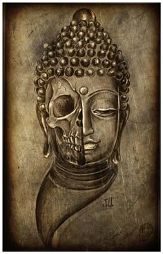
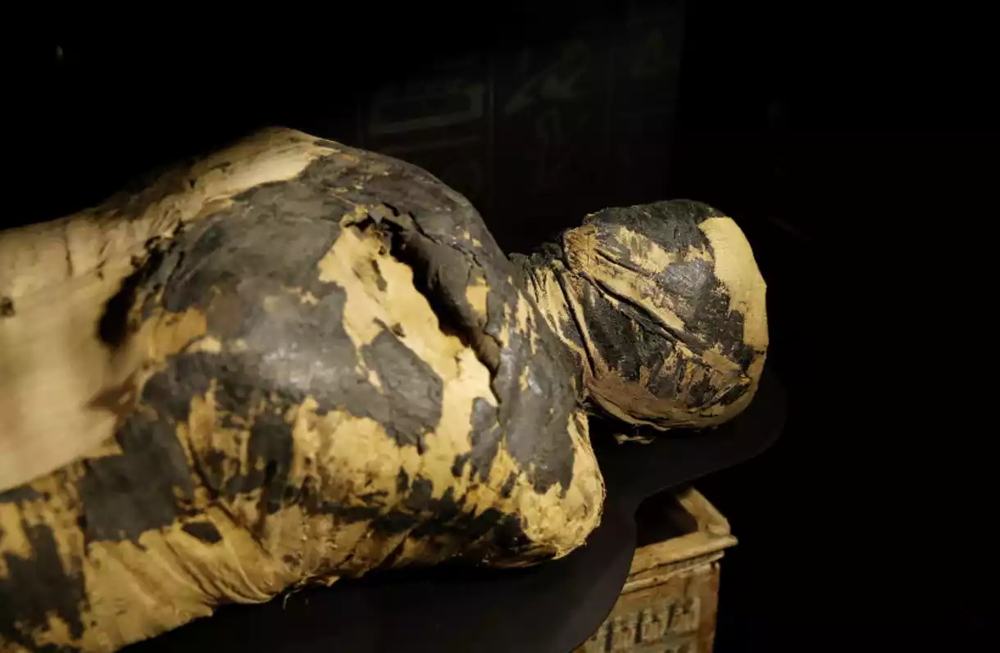
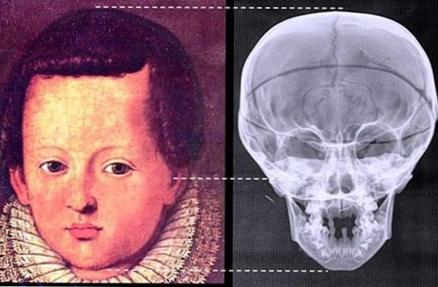

SECRETOS DE LA CRIPTA
‘Historias de la Cripta’. Descubre una colección fascinante de misterios, leyendas urbanas y casos inexplicables que desafían toda explicación lógica. Desde encuentros con fantasmas hasta avistamientos de criaturas sobrenaturales, nuestro sitio te lleva a través de un viaje emocionante hacia lo desconocido.
Las máscaras de muerte siberianas
En 2015, los investigadores encontraron 20 máscaras de muerte en una antigua cripta en la región de Kemerovo en Siberia. La tumba pertenecía a la enigmática gente de Tashtyk, guerreros que controlaban grandes porciones de Siberia entre 300 a. C. y 500 d. C. La cripta fue excavada en el suelo, rodeada por un muro de piedra y cubierta con un techo de leña. La fosa de entierro masiva tardó dos años en excavar. Los arqueólogos descubrieron los restos de 30 personas que habían sido cremadas y colocadas dentro de cuerpos falsos hechos de tela y cuero. Las "máscaras de la muerte" del yeso proporcionaron las caras de los maniquíes. Algunos se sorprendieron al descubrir que las máscaras de la muerte de Tashtyk tienen características estereotipadas europeas. Los restos de niños fueron descubiertos fuera de la tumba. Ninguno de los jóvenes tenía máscaras de muerte. El yeso es un mineral blando, por lo que muchas de las máscaras están en fragmentos. Sin embargo, los expertos creen que pueden juntar las caras rotas.
siete momias mágicas
Crédito de la foto: Centro polaco de archivos de arqueología mediterránea a través de Live Science, En 2009, los arqueólogos descubrieron siete momias en una cripta de 900 años con paredes cubiertas de inscripciones mágicas. Los restos preservados naturalmente provinieron de las profundidades de un monasterio en Old Dongola, la capital del reino medieval de Makuria en el actual Sudán. La cripta contenía los restos de siete machos, todos mayores de 40 años. La cámara funeraria estaba sellada con ladrillos y mortero de barro. Inscripciones en tinta negra en coptos sahídicos y griegos cubren las paredes encaladas de la cripta. Hay extractos del Evangelio junto con nombres y símbolos mágicos, que se cree que tenían la intención de proteger a los muertos de las fuerzas maliciosas. La tradición sostenía que los recién fallecidos se encontraban en un estado de cambio y eran vulnerables antes de enfrentar el juicio. La cripta se ubicó por primera vez en 1933, pero las excavaciones no se producirían hasta más de 70 años después. Los expertos creen que una de las momias podría ser el arzobispo Georgios, uno de los cristianos más poderosos de Makuria.
El cráneo de Buda
Crédito de la foto: Reliquias culturales chinas a través de orígenes antiguos. Los arqueólogos creen que pueden haber encontrado un trozo del cráneo de Buda en un cofre de 1.000 años descubierto en una cripta debajo del Templo Grand Bao'en en Nanjing, China. La estupa no solo contenía lo que podría ser el cráneo del Buda, sino que estaba llena de huesos de otros santos budistas. La caja se construyó con madera de sándalo tallada, cubierta de plata y oro, y con incrustaciones de cristal, vidrio, lapislázuli y ágata. Las inscripciones revelan que la estupa se hizo durante el reinado del emperador Zhenzong (997-1022 dC) durante la dinastía Song. La estupa estaba anidada dentro de una caja de hierro, que a su vez estaba alojada en un cofre de piedra. Según la tradición, cuando el Buda fue cremado, el rey Ashoka de la India decidió dividir el cuerpo del santo en 84,000 partes iguales. China recibió 19 de estos, incluido el hueso parietal de Buda. Los restos fueron originalmente alojados en otro templo, que fue destruido en la guerra hace 1.400 años.
momia de cancer
En 1995, los arqueólogos descubrieron una momia húngara del siglo XVIII que está revolucionando el estudio del cáncer. Los restos preservados naturalmente fueron descubiertos en la cripta sellada de una iglesia dominicana en Vac. Se encontraron aproximadamente 260 restos momificados en total. Un equipo de investigadores israelíes probó los cadáveres para ver si eran portadores de genes causantes de cáncer. En un individuo, descubrieron una mutación en el gen APC, que se sabe que causa un mayor riesgo de cáncer de colon. Lo que los hallazgos sugieren es que existía una predisposición antes de que la enfermedad se convirtiera en un problema de salud grave. Hoy en día, el cáncer colorrectal es la tercera forma más común de cáncer. La mayoría considera que es una enfermedad moderna que resulta de una falta de actividad, alimentos procesados y una mayor esperanza de vida. La presencia del gen mutado en otras momias indicaría que la herencia genética podría ser incluso más importante que el medio ambiente.
Cripta secreta de los Medici
En 2004, los arqueólogos descubrieron una cripta secreta que pertenecía a la poderosa familia italiana Medici. Durante una exploración anterior de una cripta conocida de los Medici, los expertos se sorprendieron al descubrir que la tumba de los últimos Medici, el gran duque Gian Gastone, estaba vacía. En un intento por encontrar el cadáver perdido, descubrieron una cámara clandestina detrás del altar principal de la Iglesia de San Lorenzo de Florencia. Los investigadores levantaron una losa de piedra para revelar los pasos que conducían a la cripta oculta. La cámara secreta contenía un ataúd adulto, que contenía Gastone, y ocho ataúdes infantiles. Todos los huesos de los niños mostraban signos de raquitismo. Esto es probablemente debido a la falta de vitamina D en su dieta. Estar protegido en interiores bajo un maquillaje espeso y pálido no ayudó a absorber este elemento necesario. Los investigadores no pueden identificar a algunos de los jóvenes muertos. Es probable que al menos algunos de ellos sean hijos ilegítimos.
La obra maestra oculta de Praga
Los historiadores del arte descubrieron recientemente un monumento nunca antes visto en las profundidades de la cripta Loreto de Praga, debajo de la Iglesia de la Natividad de Nuestro Señor. Las paredes de la tumba están cubiertas de representaciones intrincadas de la muerte, la resurrección y las alegorías del tiempo. Fechadas en 1664, estas asombrosas representaciones de Ars moriendi Utilice solo negro y gris para crear un sofisticado sistema de sombreado conocido como claroscuro. Las pinturas se descubrieron en 2011, cuando la cripta se abrió por primera vez en décadas. Muchas de las obras están inspiradas en el arte holandés, incluidas las copias de Rembrandt. La identidad del artista sigue siendo un misterio. Algunos especulan que podría haber sido Cosmas de Austria o el pintor vienés Tobias Pock. Ambos tenían una historia de trabajo con los monjes capuchinos. También se desconoce si el tema fue seleccionado por el artista o el patrón de la cripta, la condesa Elisabeth Apollonia de Kolowrat.